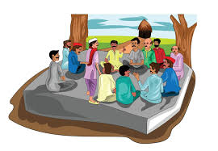

The people of Thanjavur are known for their warm hospitality and deep-rooted cultural traditions. The community is diverse, with a mix of different ethnic and religious backgrounds, predominantly Tamil-speaking Hindus. Traditional values play a significant role in daily life, and many residents are involved in agriculture, particularly rice farming, which is central to the region's economy. Cultural activities are a vital part of life in Thanjavur. The city is famous for its classical music and dance forms, such as Bharatanatyam, which have been nurtured here for centuries. Thanjavur is also known for its traditional crafts, including Thanjavur painting and bronze sculptures, reflecting the artistic heritage of the region.
Discover the vibrant and diverse community of Thanjavur.
